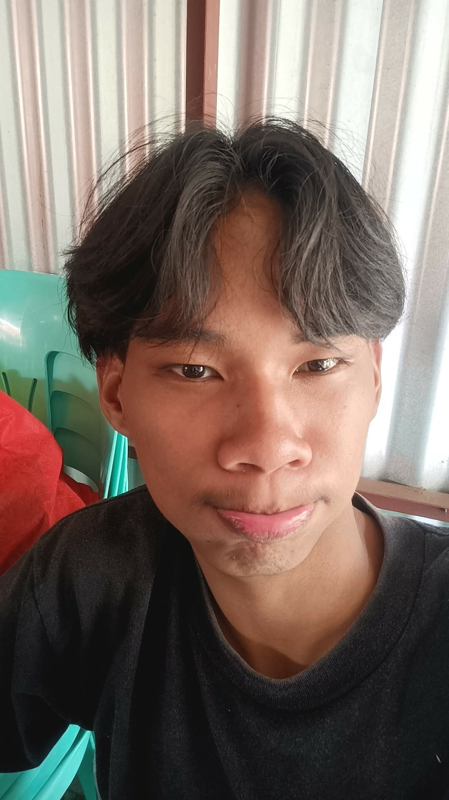

This is me

About My Life
Good day, My name is Eidderf Josh S. Matias. I am 16 years old. I'm a student who wants to learn new things and a boy who wants to be successful someday.
I am currently studying at Unida Christian Colleges. Being a student helps me grow academically and personally every day. I always try my best to improve my skills and knowledge. Education is very important to me because it prepares me for my future.
I was born on September 21, 2009. I am someone who values family, responsibility, and personal growth. I enjoy learning from my experiences and from the people around me. Each day is an opportunity for me to become better
This are my Hobbies

Sports:My Sports are playing basketball, badminton and volleyball. I enjoy sports because they keep me active and teach teamwork and discipline.

Cooking: I also love cooking, which allows me to be creative and helpful at home. These activities make my free time fun and meaningful.
Aside from my hobbies, I also help by doing household chores. I believe that being responsible at home is very important. It helps me become more independent and organized. I am a hardworking and motivated person who always strives to do my best.